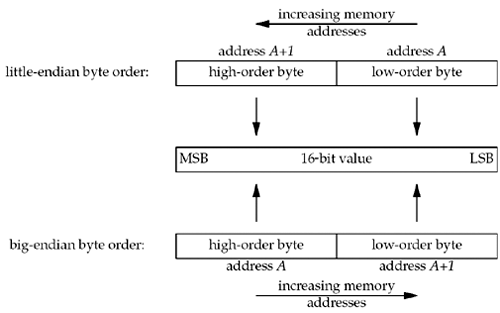
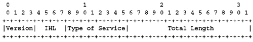

| [ Team LiB ] |
|
3.4 Byte Ordering FunctionsConsider a 16-bit integer that is made up of 2 bytes. There are two ways to store the two bytes in memory: with the low-order byte at the starting address, known as little-endian byte order, or with the high-order byte at the starting address, known as big-endian byte order. We show these two formats in Figure 3.9. Figure 3.9. Little-endian byte order and big-endian byte order for a 16-bit integer. In this figure, we show increasing memory addresses going from right to left in the top, and from left to right in the bottom. We also show the most significant bit (MSB) as the leftmost bit of the 16-bit value and the least significant bit (LSB) as the rightmost bit.
Unfortunately, there is no standard between these two byte orderings and we encounter systems that use both formats. We refer to the byte ordering used by a given system as the host byte order. The program shown in Figure 3.10 prints the host byte order. Figure 3.10 Program to determine host byte order.intro/byteorder.c
1 #include "unp.h"
2 int
3 main(int argc, char **argv)
4 {
5 union {
6 short s;
7 char c[sizeof(short)];
8 } un;
9 un.s = 0x0102;
10 printf("%s: ", CPU_VENDOR_OS);
11 if (sizeof(short) == 2) {
12 if (un.c[0] == 1 && un.c[1] == 2)
13 printf("big-endian\n");
14 else if (un.c[0] == 2 && un.c[1] == 1)
15 printf("little-endian\n");
16 else
17 printf("unknown\n");
18 } else
19 printf("sizeof(short) = %d\n", sizeof(short));
20 exit(0);
21 }
We store the two-byte value 0x0102 in the short integer and then look at the two consecutive bytes, c[0] (the address A in Figure 3.9) and c[1] (the address A+1 in Figure 3.9), to determine the byte order. The string CPU_VENDOR_OS is determined by the GNU autoconf program when the software in this book is configured, and it identifies the CPU type, vendor, and OS release. We show some examples here in the output from this program when run on the various systems in Figure 1.16. freebsd4 % byteorder i386-unknown-freebsd4.8: little-endian macosx % byteorder powerpc-apple-darwin6.6: big-endian freebsd5 % byteorder sparc64-unknown-freebsd5.1: big-endian aix % byteorder powerpc-ibm-aix5.1.0.0: big-endian hpux % byteorder hppa1.1-hp-hpux11.11: big-endian linux % byteorder i586-pc-linux-gnu: little-endian solaris % byteorder sparc-sun-solaris2.9: big-endian We have talked about the byte ordering of a 16-bit integer; obviously, the same discussion applies to a 32-bit integer.
We must deal with these byte ordering differences as network programmers because networking protocols must specify a network byte order. For example, in a TCP segment, there is a 16-bit port number and a 32-bit IPv4 address. The sending protocol stack and the receiving protocol stack must agree on the order in which the bytes of these multibyte fields will be transmitted. The Internet protocols use big-endian byte ordering for these multibyte integers. In theory, an implementation could store the fields in a socket address structure in host byte order and then convert to and from the network byte order when moving the fields to and from the protocol headers, saving us from having to worry about this detail. But, both history and the POSIX specification say that certain fields in the socket address structures must be maintained in network byte order. Our concern is therefore converting between host byte order and network byte order. We use the following four functions to convert between these two byte orders.
In the names of these functions, h stands for host, n stands for network, s stands for short, and l stands for long. The terms "short" and "long" are historical artifacts from the Digital VAX implementation of 4.2BSD. We should instead think of s as a 16-bit value (such as a TCP or UDP port number) and l as a 32-bit value (such as an IPv4 address). Indeed, on the 64-bit Digital Alpha, a long integer occupies 64 bits, yet the htonl and ntohl functions operate on 32-bit values. When using these functions, we do not care about the actual values (big-endian or little-endian) for the host byte order and the network byte order. What we must do is call the appropriate function to convert a given value between the host and network byte order. On those systems that have the same byte ordering as the Internet protocols (big-endian), these four functions are usually defined as null macros. We will talk more about the byte ordering problem, with respect to the data contained in a network packet as opposed to the fields in the protocol headers, in Section 5.18 and Exercise 5.8. We have not yet defined the term "byte." We use the term to mean an 8-bit quantity since almost all current computer systems use 8-bit bytes. Most Internet standards use the term octet instead of byte to mean an 8-bit quantity. This started in the early days of TCP/IP because much of the early work was done on systems such as the DEC-10, which did not use 8-bit bytes. Another important convention in Internet standards is bit ordering. In many Internet standards, you will see "pictures" of packets that look similar to the following (this is the first 32 bits of the IPv4 header from RFC 791):  This represents four bytes in the order in which they appear on the wire; the leftmost bit is the most significant. However, the numbering starts with zero assigned to the most significant bit. This is a notation that you should become familiar with to make it easier to read protocol definitions in RFCs.
|
| [ Team LiB ] |
|